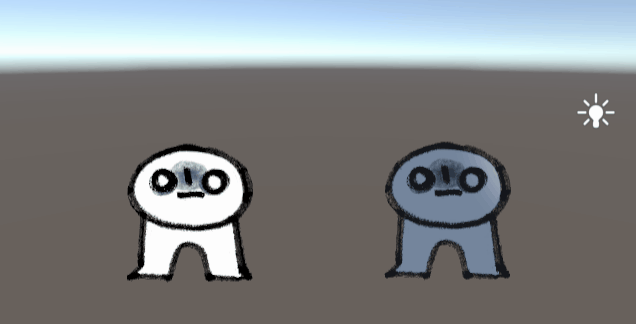
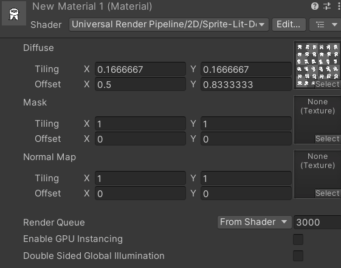
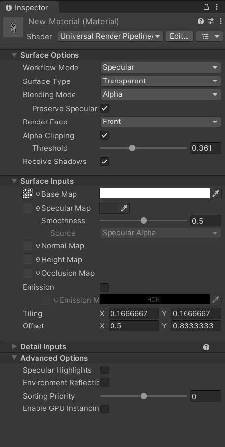

Sprites and Video players
Here are some workflows for adding still and moving images to your scene.
Add a texture material to a 3D Plane
Lit VS Unlit shaders
When creating a new material in the Universal 3D pipeline, the default shader used for this material is a Universal Render Pipeline (URP) Lit shader. This means your material render will account for lighting in your scene.
If you change this to an URP unlit shader, the material renders independently of the surrounding lighting.

URP also has sprite specific shaders that you may choose to use instead. In the shader drop down, go to URP > 2D > select a Sprite shader.

Material Properties
(Note: The following properties may or may not be available depending on what material shader you're using.)

Here are some notable properties you may consider adjusting for your material asset:
- Workflow Mode: Choose between metallic or specular.
- Surface type: Opaque by default. If your texture has transparent areas, you may need to change this to Transparent to reflect the alpha channel.
- Render face: Front (only) by default. In 3D meshes, each face has a normal vector which determines which side the material should render on. If you want your texture to be visible on both sides of your mesh surface, you may need to change this to be "Both".
- Texture maps: Add a texture asset in the box to the left of "Base Map".
- Emission: Emit light across the material surface (you may also add an image texture here as an emission map). If you have Global Volume, this will add a glow effect to your material surface at a positive-value intensity.
- Tiling and Offset: Determines how your texture is scaled / positioned along the mesh surface.
- Specular Highlights and Environment Reflections (under Advanced Options): Toggle these checkboxes and see how they affect the way your material is lit.
Watch out for Z-fighting in intersecting mesh surfaces!
When meshes intersect with other mesh objects, especially if they're overlapping on top of one another, you may encounter a bug that flickers between the two meshes as your camera moves past it. This may be due to Z-fighting, which happens when the camera confuses the depth levels of intersecting mesh objects, and can't determine which to render on top of the other.
The best way to avoid this is to keep your mesh objects separate from each other, and not intersect multiple mesh objects together.
Sprite Renderer Component
This component allows you to use 2D sprites in GameObjects without a mesh component.
First, make sure your image is imported as a "Sprite (2D and UI)" texture type. This allows you to select this image for the Sprite component for objects in your scene, and for UI Images.
If you're importing a sprite sheet, you will also need to do the following:
- Set the Sprite Mode to "Multiple"
- Install the 2D Sprite package from Unity's package manager -- this will let you slice your sprite sheet into individual sprites using the Sprite Editor.
- When opening up the Sprite Editor, you may choose to Slice Grid by Cell Size or Cell Count. Click "Apply". Now you will have access to individual sprites when you click the expand arrow on your sprite sheet asset.
Once you have your texture correctly imported, create a new empty GameObject and add a Sprite Renderer component.
Consider adjusting the following properties according to your needs:
- Sprite: Set this to the sprite texture you imported.
- Color: Change the tint of your sprite material.
- Order in Layer (under Additional Settings): Determines the order in which overlapping sprites are rendered (higher order values render on top of sprites with lower order values.)
Using the Sprite Component on a 3D Moving Rigidbody
If you're applying a sprite to a moving 3D object (let's say a player gameobject), I recommend attaching the sprite component inside a separate gameobject, then parent it to your player GameObject that has your Rigidbody, collider components, and player movement scripts.
In my package example, here is how my enemy object is arranged in my scene hierarchy:
- Parent object with Rigidbody, colliders, and physics-based movement script.
- Child object with Sprite component and sprite-related scripts (eg. rotating towards player camera, sprite switcher)
Change Sprite using Scripts
public Sprite sprIdle, sprAction; // attach your sprite textures in the inspector
SpriteRenderer sprRend; // attach this script to the same object containing your sprite renderer
void Start()
{
sprRend = GetComponent<SpriteRenderer>();
ChangeSprite(sprIdle);
}
//you could also call this function in a public UnityEvent
//and attach the Sprite as an argument in the inspector.
public void ChangeSprite(Sprite toThisSprite)
{
sprRend.sprite = toThisSprite;
}
//you could also consider using a coroutine function
//to reset the sprite back to its idle state after a set duration
Rotate Sprite Towards Camera
This method uses the Vector3.RotateTowards() function to rotate sprites towards the camera.
public class RotateTowardsPlayer : MonoBehaviour
{
public float rotationSpeed;
private void LateUpdate()
{
//Camera.main is a method for getting your camera that's tagged "MainCamera"
//typically only a single MainCamera exists in your scene
//make sure to tag your player camera as MainCamera.
//first get directional vector3 from this object to camera position.
Vector3 targetDirection = Camera.main.transform.position - transform.position;
float step = rotationSpeed * Time.deltaTime;
//Rotate the forward vector towards the target direction by one step
Vector3 newDirection = Vector3.RotateTowards(transform.forward, targetDirection, step, 0.0f);
//rotate our object along this new direction.
//here, i'm setting the y-vector as 0 so it rotates along the world Y-axis.
transform.rotation = Quaternion.LookRotation(new Vector3(newDirection.x,0,newDirection.z));
}
}
Video Player Component
Some course reminders
- Project 2 is due Thursday!